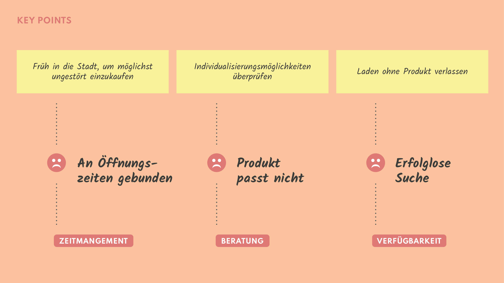

Anhand einer User Journey Map wurde ein typischer Ablauf eines Einkaufs erstellt und die dabei auftretenden positiven sowie auch negativen Aspekte hervorgehoben.
Die Auswertung der User Journey Map hat ergeben, dass es drei kritische Punkte innerhalb einer Customer Journey gibt, bei denen man ansetzen könnte. Um den Dichtestress in den Läden zu vermeiden, stehen z.B. viele Kunden extra früh auf, um sich noch vor dem grossen Andrang ungestört im Laden beraten lassen zu können.
Trotz einer umfangreichen Beratung stellt sich dabei aber oft heraus, dass das ganz individuell gesuchte Produkt leider momentan gerade nicht im Laden verfügbar ist.
Enttäuscht über diesen erfolglosen Versuch werden dann einerseits noch weitere Geschäfte aufgesucht, mit der Hoffnung, dort allenfalls ein passendes Angebot zu finden oder aber die Suche nach dem entsprechenden Produkt wird direkt ins Internet verlagert.
Die Hauptprobleme innerhalb der User Journey lassen sich also in drei Bereiche zusammenfassen: Das Zeitmanagement, die Beratung sowie die Verfügbarkeit von Produkten.
An dieser Stelle setzt domizil an, indem es dem Kunden ermöglichen möchte, sich über ein Produkt bequem zu Hause auf der Couch zu informieren, allfällige Fragen über den direkten Kontakt zum Verkäufer zu klären und anschliessend einen Besichtigungstermin zu vereinbaren, bei dem das Produkt auch sicher im Laden begutachtet werden kann.
Das nachfolgende SOLL-Szenario zeigt den angestrebten Ablauf der neuen User Journey auf:
Möchten Sie gern mehr über die digitale Umsetzung erfahren?
Jetzt lesen